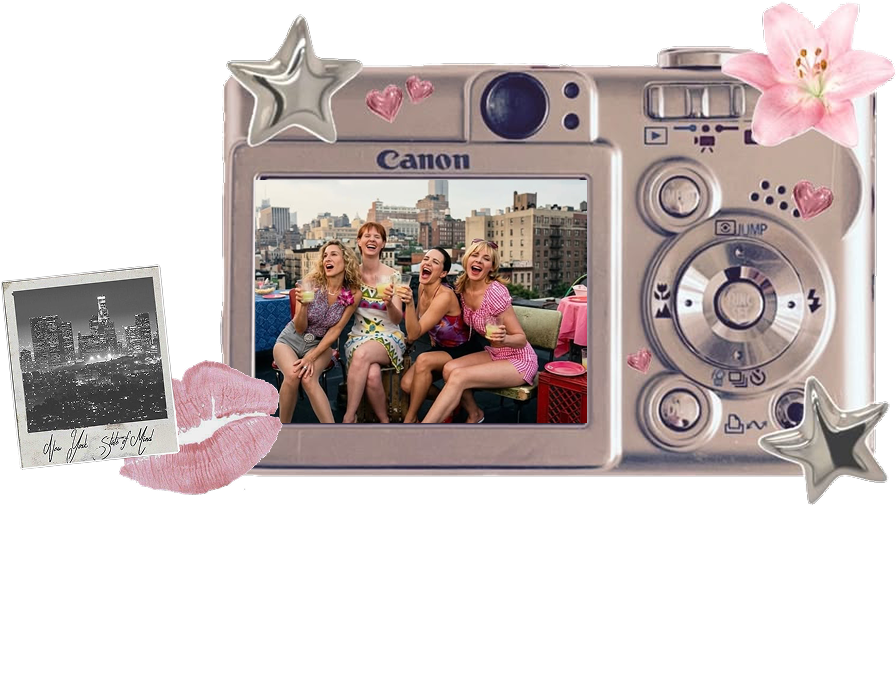
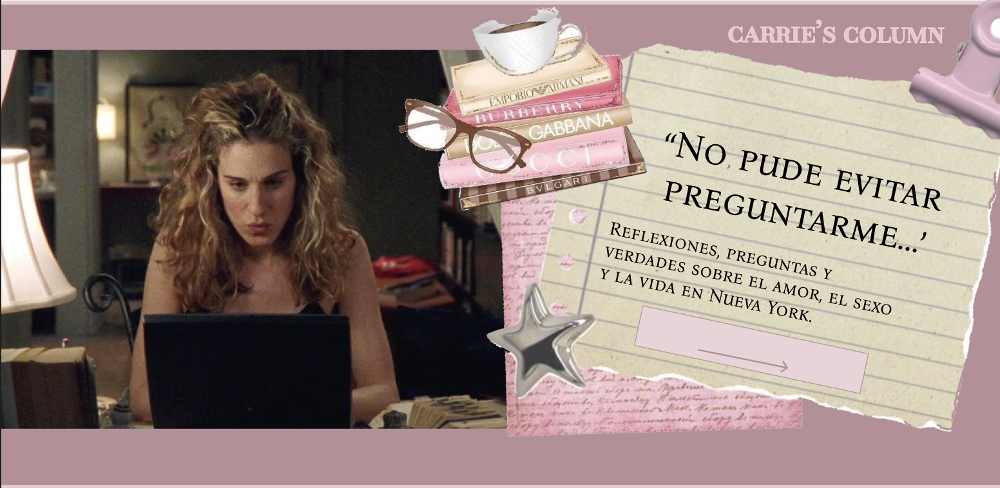
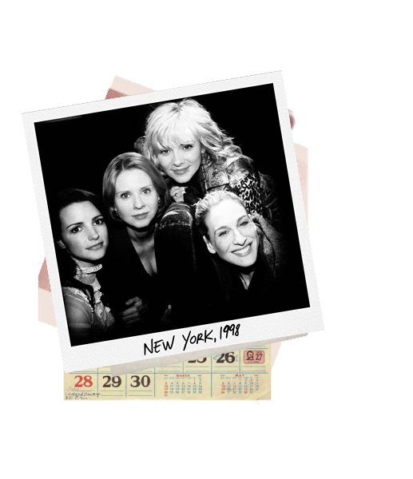
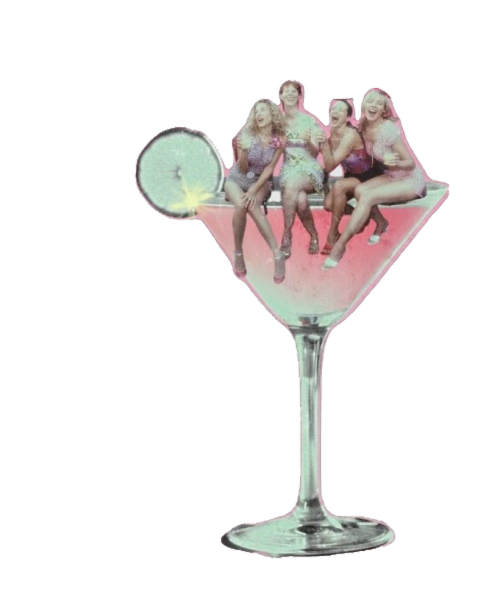

CONOCE A LAS CHICAS
Cada una tiene una historia. Conocelas un poquito más.
EXPLORAR TODOS LOS PERSONAJES ↗
💄 CARRIE'S CLOSET ↗
EPISODIOS
6 TEMPORADAS, 94 EPISODIOS
HISTORIAS QUE MARCARON UNA GENERACIÓN.
01TEMPORADA 112 capítulos · 1998Ver resumen ↗02TEMPORADA 218 capítulos · 1999Ver resumen ↗03TEMPORADA 318 capítulos · 2000Ver resumen ↗04TEMPORADA 418 capítulos · 2001–2002Ver resumen ↗05TEMPORADA 58 capítulos · 2002Ver resumen ↗06TEMPORADA 620 capítulos · 2003–2004Ver resumen ↗
Elegí una temporada para descubrir su historia.
EXPLORAR TEMPORADAS Y EPISODIOS ↗
Y así,☆sin más...
Amor, amistad, moda y
Noches inolvidables en Nueva York
